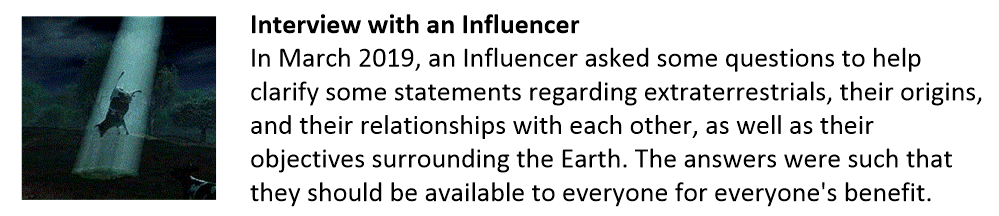
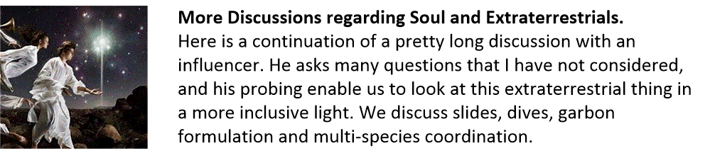
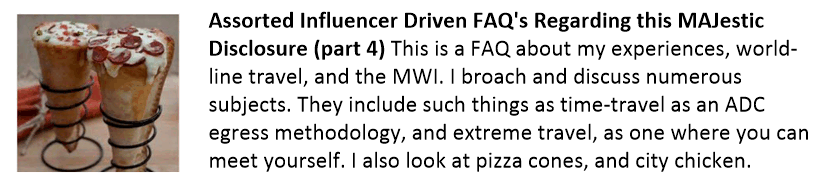

This index is a list of questions that have been asked by influencers, and my answers to them. If you have any questions regarding Metallicman, you should start out here first.
Influencer Questions
Now that I have presented such a great selection of posts to muse about, it should be of no surprise that people have asked me questions. Well here are posts related to the Q&A efforts asked of me. It’s good stuff, I’ll tell you what.


